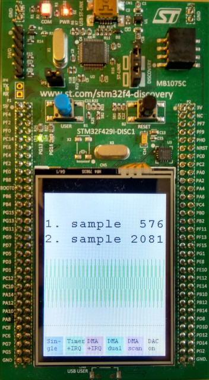

This demo_code is a template for the Electronics-Project Modules ET.PM3: Cable-Monitor and ET.PM4: Radar-Sensor
in the second year of the electronics engineering curriculum at the School of Engineering of the Zurich University of Applied Sciences.
Before starting to write own code, read this documentation carefully.
The file measuring.c shows how to configure ADC, Timer and DMA.
Consult the file menu.c for examples on how to use display and touchscreen.
pushbutton.c handles external interrupts.
main.c puts everything together.

The template code is written for the evaluation board 32F429IDISCOVERY (Discovery kit with STM32F429ZI MCU).
What has to be done in terms of Firmware Documentation
Overall Information on the Project
- Todo:
- Adapt the file mainpage.dox in the folder html/doc to reflect your own project
You may add files in the same folder if appropriate. They will be added automatically by Doxygen to the Related Pages tab.
Use one of the files present in the html/doc folder as template. You can find the often used @commands for Doxygen in those files.
Documenting the Code
- Todo:
- Document all the .h and .c files See documenting.html on how to do that.
Before editing or writing code, take the coding_guidelines.html to heart.
Documenting the Tests
- Todo:
- Define a test plan and document the tests.
This includes at least: test scenarios, conditions, expected results, pass/fail criteria, achieved results, verdict and remarks where appropriate.
Use testing.html as a starting point.
- Author
- Hanspeter Hochreutener (hhrt@.nosp@m.zhaw.nosp@m..ch)
- Date
- 03.08.2021
- Note
- Evalboard revision E (blue PCB) has an inverted y-axis in the touch controller compared to the display. Uncomment or comment the #define EVAL_REV_E in main.h accordingly.
- Bug:
- No known bugs.